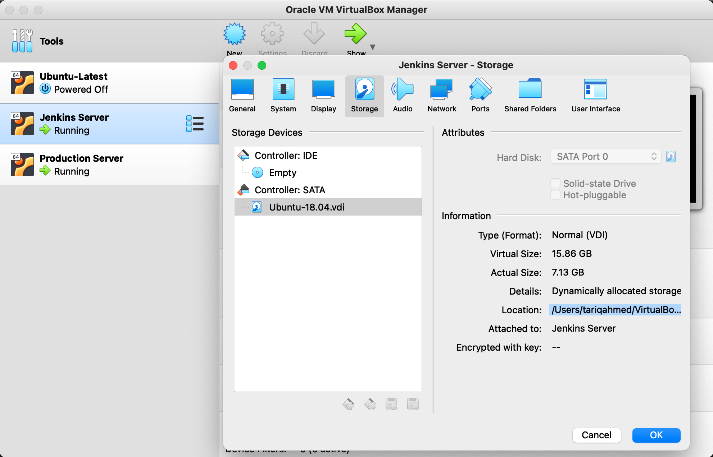

Dynamic Analysis
Objective
The aim of this section is to perform dynamic analysis using DAST tools on DVNA.
About DAST
- Dynamic Application Security Testing (DAST) is a testing methodology which looks for security vulnerabilities by simulating external attacks on an application while the application is running.
- DAST performs black-box security testing.
OWASP ZAP
Implementing ZAP analysis with docker is simpler and faster than manual installation. I followed this documentation. First, pull the ZAP image from docker hub.
sudo docker pull owasp/zap2docker-stable
TRIED THIS! It didnt work!
Create a docker network for both application container and zap container to run in.
sudo docker network create zapnet
sudo docker run -u zap -td --name owasp-zap --net zapnet -p 8090:8090 owasp/zap2docker-stable zap.sh -daemon -port 8090 -host 0.0.0.0 -config api.disablekey=true
sudo docker exec owasp-zap zap-cli open-url http://192.168.56.102:9090
sudo docker exec owasp-zap zap-cli active-scan http://192.168.56.102:9090
FINAL SOLUTION
The baseline-scan script is intended to be ideal to run in a CI/CD environment, even against production sites. Docker flags used
--rm, remove container after completion
-d, run as a background job
-u
Zap CLI flags used
-t 'target', specify target to scan -r 'file.html', generate an HTML output report -l level, minimum level to show: PASS, IGNORE, INFO, WARN or FAIL.
sudo docker run --rm -td -u zap --name owasp-zap -v ~/:/zap/wrk/ owasp/zap2docker-stable zap-baseline.py -t http://192.168.56.102:9090 -r owasp-zap-report.html -l PASS
To run a fullscan script, run the following command
sudo docker run --rm -td -u zap --name owasp-zap -v ~/:/zap/wrk/ owasp/zap2docker-stable zap-full-scan.py -t http://192.168.56.102:9090 -r owasp-zap-report.html -l PASS
The report owasp-zap-report.html, generated on successful completion, will be located in the users home directory.
Note: To open .html file in browser from terminal, type open owasp-report.html from host terminal.
DAST Pipeline
As we've already seen in Setup of Production Server, DVNA is deployed in a docker container. To perform DAST on DVNA, the application will run in a docker container and the DAST tool will run in another container (as shown earlier in this section). To work with docker containers via Jenkins pipeline, you'll need to add jenkins user to group docker to run docker commands without sudo.
sudo usermod -aG docker jenkins
sudo reboot
pipeline {
agent any
stages {
stage ('Initialization') {
steps {
sh 'echo "Starting the build!"'
}
}
stage('Copy Application Code') {
steps {
sh 'ssh -o StrictHostKeyChecking=no tariq@192.168.56.102 "docker start dvna-mysql && docker start dvna-app; docker cp dvna-app:/app/ ~/;"'
sh 'scp -rC tariq@192.168.56.102:~/app ~/ && mkdir ~/report && chmod 777 ~/report'
}
}
stage('NodeJsScan') {
steps {
sh 'njsscan --json -o ~/report/nodejsscan-report ~/app || true'
}
}
stage('Auditjs') {
steps {
sh 'cd ~/app; auditjs ossi > ~/report/auditjs-report || true'
}
}
stage ('OWASP Dependency-Check') {
steps {
sh '~/dependency-check/bin/dependency-check.sh --scan ~/app --out ~/report/dependency-check-report --format JSON --prettyPrint || true'
}
}
stage('ZAP Scan') {
steps {
sh 'docker run --rm -i -u zap --name owasp-zap -v ~/report/:/zap/wrk/ owasp/zap2docker-stable zap-baseline.py -t http://192.168.56.102:9090 -r zap-report.html -l PASS || true'
}
}
stage ('Final') {
steps {
sh 'ssh -o StrictHostKeyChecking=no tariq@192.168.56.102 "docker stop dvna-app && docker stop dvna-mysql;"'
sh 'rm -rf ~/app'
sh 'echo "Scan successfully completed!"'
}
}
}
}
Increase VM Disk Space
While trying to run the Jenkins pipeline, I noticed there was an error during the ZAP scan. On reviewing the container logs, I realized that my VM was out of disk space. So instead of creating a new VM with more disk space (I was currently using the default 10GB), I decided to increase the disk space of the Jenkins VM to 16GB.
I followed this documentation. Get location of your Jenkins VM virtual hard disk. Go to Oracle VM VirtualBox Manager -> Jenkins Server -> Settings -> Storage -> Controller: IDE.

Increase Disk Size
To increase size of virtual disk, type the following command in the terminal (for Linux/MaxOS).
VBoxManage modifyhd --resize <NEW-SIZE> <LOCATION-OF-VDI-IMAGE>
Check if size changed successfully.
VBoxManage showhdinfo <LOCATION-OF-VDI-IMAGE> | grep Capacity
Boot from GParted on your VM
I followed the same steps as mentioned in the Boot from GParted on your VM section of the documentation. Even after having followed all the steps, the partition was still not set properly. I found the solution to this problem here.
In the Jenkins VM, resize the logical volume to use all the existing and free space of the volume group.
sudo lvm
lvm> lvextend -l +100%FREE /dev/ubuntu-vg/ubuntu-lv
lvm> exit
After the command above is successful, resize the file system to use the new available space in the logical volume.
sudo resize2fs /dev/ubuntu-vg/ubuntu-lv
Check if the available space has increased.
df -h
Note
While running the ZAP scan in pipeline, I got the following error:
ERROR [Errno 13] Permission denied: '/zap/wrk/zap-report.html'
To resolve this error, I changed the permissions of /var/lib/jenkins/report directory.
sudo chmod 777 /var/lib/jenkins/report